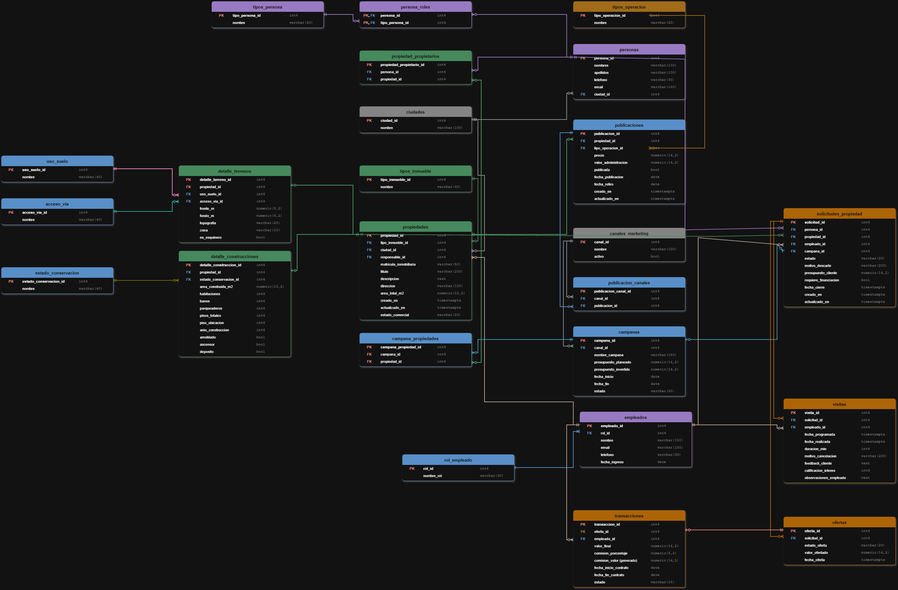

Normalización: de 1FN a BCNF
Equipo: Harold Burgos, Sofía Camelo, Juan Triana Esquema: BD_MCS v1.3 · 24 tablas · base inmobiliaria_mcs

Revisamos el esquema forma por forma. No partimos tablas que ya cumplían. Abajo está el diseño que descartamos, la decisión que tomamos y cómo quedó el modelo. El detalle de dependencias está en E3_modelo_relacional_normalizacion.md. Los archivos JSON de esta carpeta repiten las mismas claves y dependencias en formato de tabla.
1FN — Valores atómicos
| Criterio | Cumplimiento |
|---|---|
| Cada celda un solo valor atómico | ✅ 24/24 tablas |
| N:M y listas → filas en tablas puente | propiedad_propietarios, publicacion_canales, campana_propiedades, persona_roles |
Contraejemplo evitado: una fila de propiedad con columna propietarios = "Ana, Luis" y canales = "Meta; web". Eso viola 1FN y rompe consultas.
Decisión: muchos valores = muchas filas con FK, no texto concatenado.
2FN — Sin dependencias parciales de la PK
| Criterio | Cumplimiento |
|---|---|
PK compuesta solo en persona_roles | Sin atributos no llave → no hay parcial |
| Puentes con PK subrogada | Solo FKs + id; sin descriptores que dependan de una FK suelta |
| Dueños | nombres solo en personas, no en propiedad_propietarios |
Resultado: 24/24 en 2FN.
3FN — Sin dependencias transitivas de no primos
| Hecho de negocio | Dónde vive (no copiado) |
|---|---|
| Nombre de ciudad | ciudades vía propiedades.ciudad_id |
| Canal de una solicitud | solicitud → campana → canal (R10) |
| Propiedad de una visita | solo vía solicitud_id (R8) |
| Rol del empleado | rol_empleado vía empleados.rol_id |
comision_valor (R16): depende de valor_final y comision_porcentaje. No se digita: columna GENERATED en PostgreSQL. Se documenta como derivada; no se descompone a otra tabla.
Resultado: 24/24 en 3FN (con nota documentada de la columna generada).
BCNF — Todo determinante es superclave
En las dependencias funcionales del proyecto, el lado izquierdo es siempre PK, candidata (UNIQUE) o clave natural de un puente.
No hay DF del tipo “atributo no llave → otro atributo no llave”, salvo la comisión derivada (no almacenada como hecho editable).
Resultado: 24/24 en BCNF sin descomposiciones innecesarias.
Recorrido del diseño
Diseño con listas en celdas → viola 1FN
↓ puentes y columnas atómicas
1FN (24 tablas)
↓ sin descriptores en PK compuesta / puentes
2FN
↓ ciudad, canal, rol, título por JOIN; visitas sin copiar propiedad
3FN
↓ determinantes = superclaves; comision_valor generada
BCNF — BD_MCS v1.3